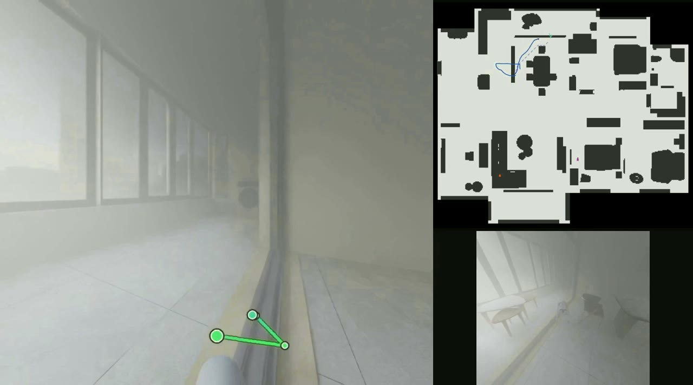
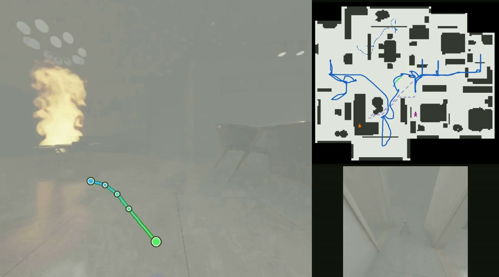
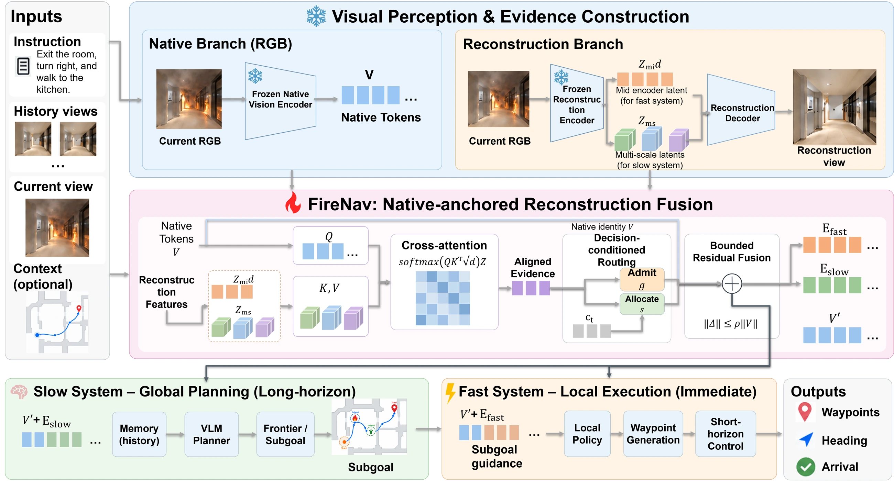
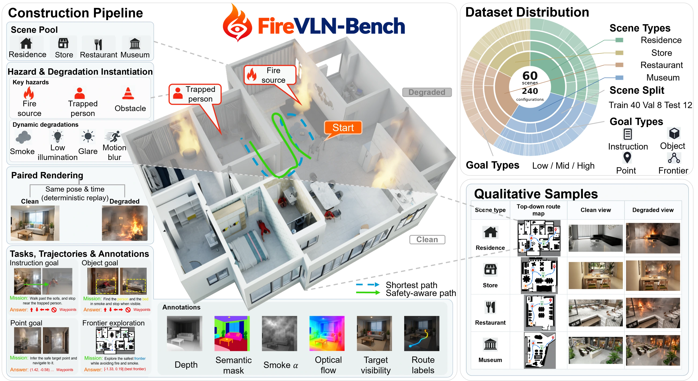
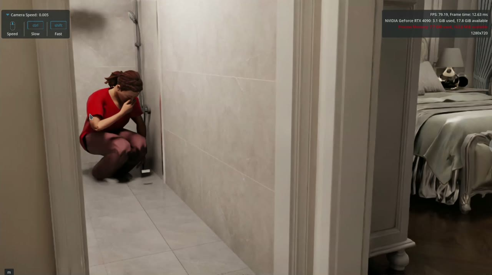
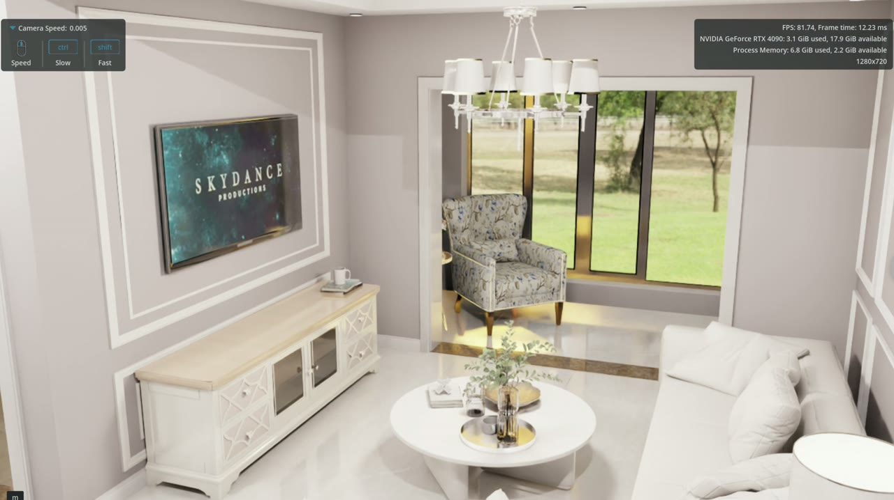
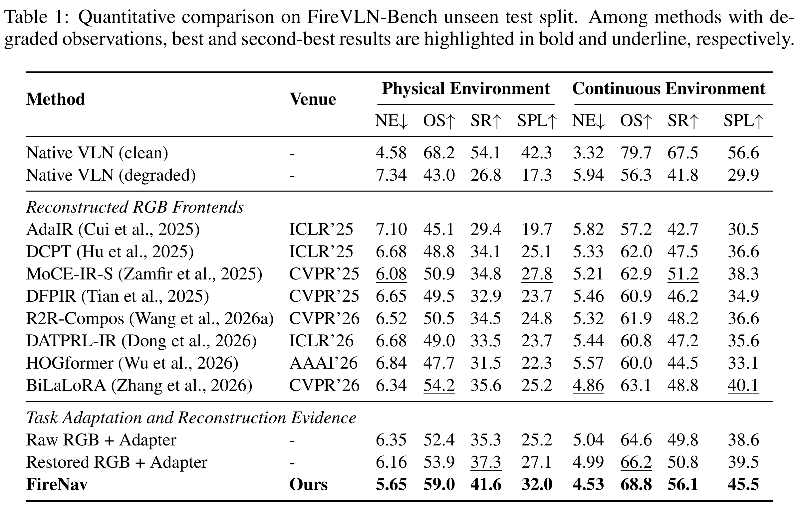
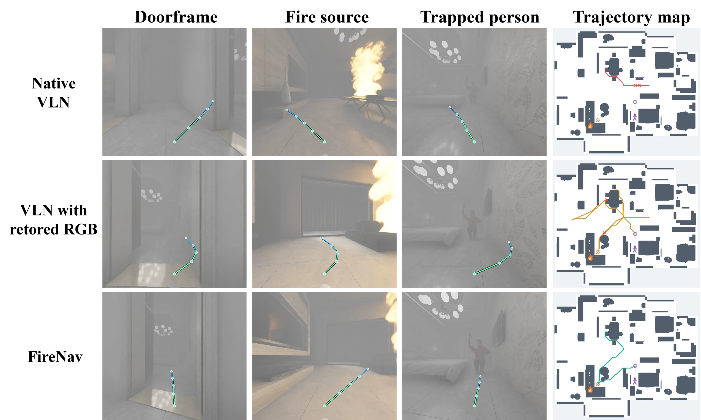

Abstract
In real-world indoor fire environments, visual degradation severely impairs instruction grounding, waypoint prediction, and long-horizon exploration in vision-language navigation (VLN). Although image restoration offers a natural means to mitigate such visual degradation, existing methods primarily optimize reconstruction fidelity, which does not necessarily translate into better navigation decisions and may even corrupt task-critical cues when applied indiscriminately. In this paper, we present FireNav, a decision-oriented reconstruction evidence routing framework that aligns visual restoration with navigation utility in VLN. To advance this task, we first contribute FireVLN-Bench, a paired indoor fire navigation benchmark with clean references preserving task semantics, safety supervision, and matched settings for continuous navigation and robot execution with simulated dynamics. Our FireNav retains native visual tokens and treats latent reconstruction features as auxiliary evidence, where a lightweight router leverages visual features, task context, and prior execution states to determine whether such evidence should be admitted and how strongly it should contribute to the visual tokens. To learn when reconstruction is beneficial, we further introduce decision utility calibration, which compares action prediction losses with and without candidate evidence under the same state, thereby supervising evidence selection according to its contribution to waypoint, heading, and arrival prediction. Experiments demonstrate that FireNav consistently outperforms state-of-the-art baselines in both navigation success and path efficiency across evaluation settings.
Navigation under Visual Degradation
Native VLN

Restored RGB

FireNav

The methods follow independent trajectories; playback time does not indicate a matched navigation state.
Long-Horizon Navigation



Method

FireVLN-Bench





Results

